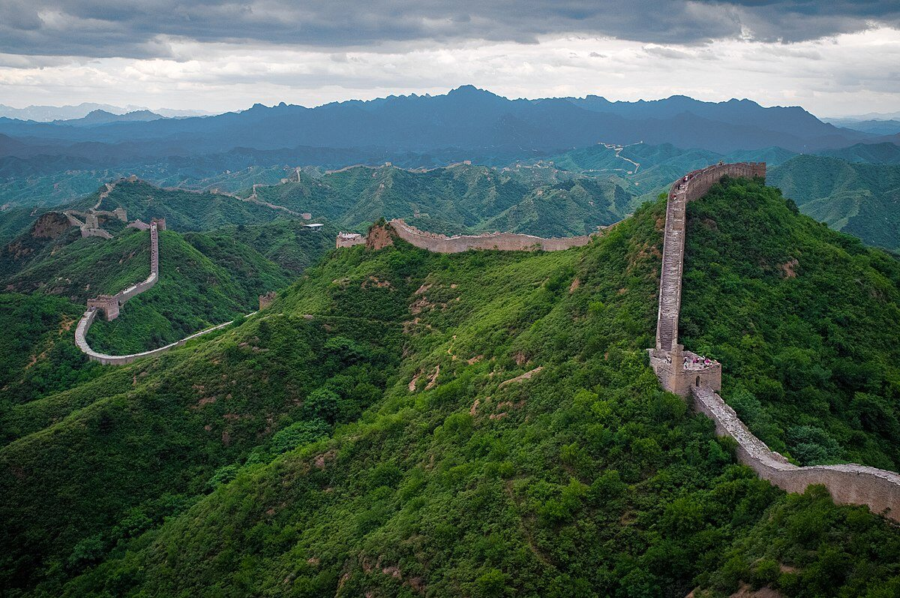

Mur Chiński
Wielki Mur Chiński, rozpoczęty około 7. wieku p.n.e. i rozbudowywany przez różne dynastie, jest olbrzymią strukturą obronną o długości około 21 000 kilometrów. To wyjątkowa sieć murów, wałów i wież, zbudowanych głównie z kamienia, cegieł i drewna, mająca chronić przed najazdami plemion nomadycznych. Ten monumentalny zabytek symbolizuje zarówno techniczne osiągnięcia, jak i strategiczne znaczenie w historii Chin.
Powrót do Menu
